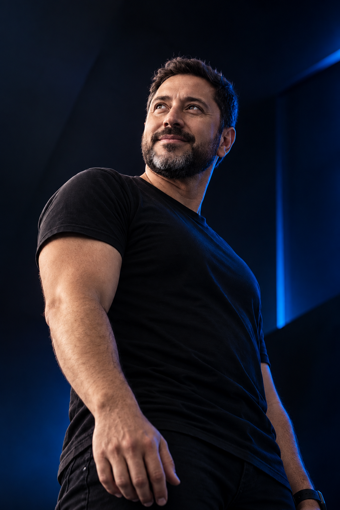
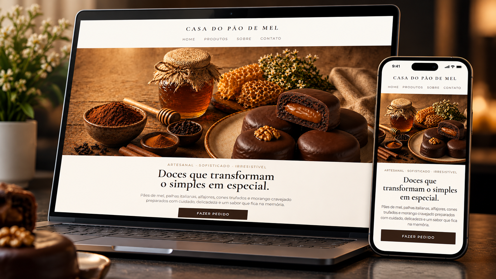
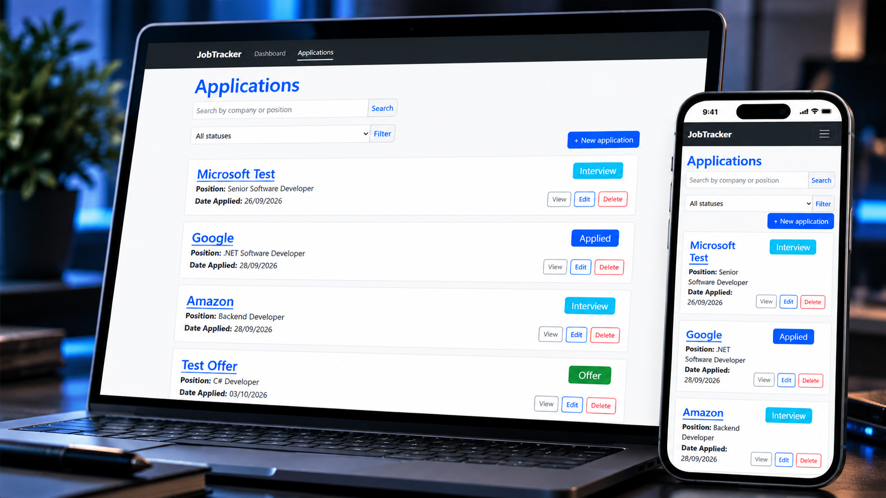
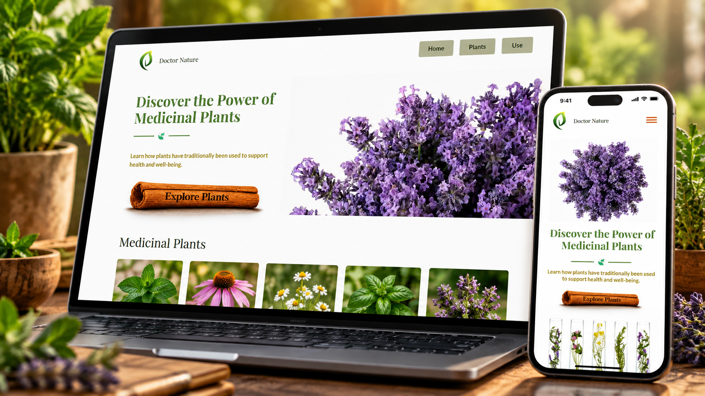

Landing Pages
Páginas estratégicas para apresentar produtos, serviços e campanhas com foco em conversão e geração de contatos.
- Design responsivo
- Foco em conversão
- Integração com WhatsApp
- SEO essencial
Sites e landing pages modernos, responsivos e desenvolvidos para fortalecer sua presença digital e transformar visitantes em oportunidades para o seu negócio.

Desenvolvimento páginas modernas, rápidas e responsivas, pensadas para apresentar sua empresa com profissionalismo e transformar visitantes em oportunidades.
Páginas estratégicas para apresentar produtos, serviços e campanhas com foco em conversão e geração de contatos.
Sites modernos para empresas e profissionais que precisam construir autoridade e fortalecer sua presença na internet.
Estruturação da presença online para tornar sua empresa mais fácil de encontrar e transmitir mais credibilidade.
Alguns projetos desenvolvidos para negócios, estudos e aplicações web, combinando design, tecnologia e experiência do usuário.

Website desenvolvido para fortalecer a presença digital de um negócio local, apresentar seus produtos e facilitar o contato com novos clientes.

Aplicação web para organizar e acompanhar candidaturas de emprego durante todo o processo seletivo.

Projeto web responsivo com catálogo interativo, navegação dinâmica e experiência pensada para diferentes dispositivos.
const project = {
strategy: "clara",
design: "responsivo",
code: "bem estruturado",
focus: "resultado"
};
function buildSolution(idea) {
return idea
.plan()
.develop()
.test()
.launch();
}Sou Patrick Marcman, desenvolvedor de software e fundador da Marcman Tech. Desenvolvo soluções digitais para empresas e profissionais que querem fortalecer sua presença na internet com tecnologia, clareza e profissionalismo.
Cada projeto é desenvolvido pensando não apenas na aparência, mas também em responsividade, experiência do usuário, performance e nos objetivos reais do negócio.
Precisa de uma landing page, um site profissional ou quer fortalecer a presença digital do seu negócio? Conte um pouco sobre o seu projeto e vamos conversar sobre a melhor solução.
Você me conta o que precisa. Eu analiso seu projeto e conversamos sobre os próximos passos.
Vamos descobrir juntos a melhor forma de transformá-la em uma solução digital.
Conte sua ideia
Definimos a solução
Construímos o projeto